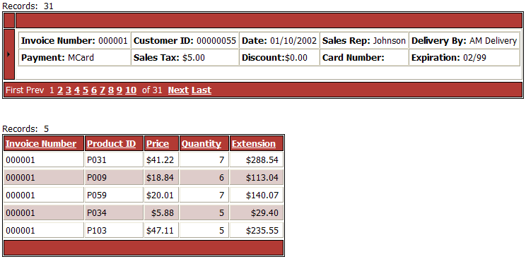
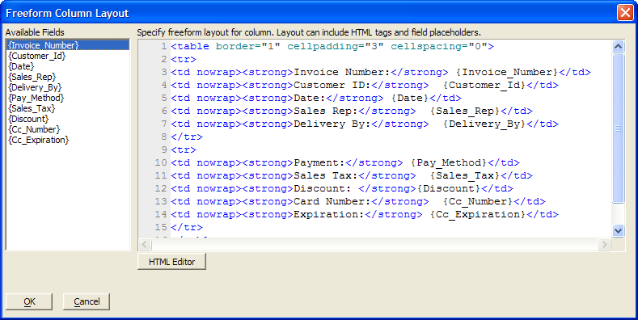
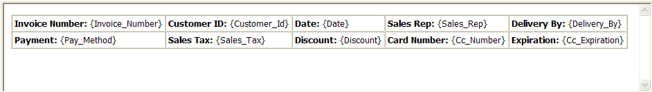
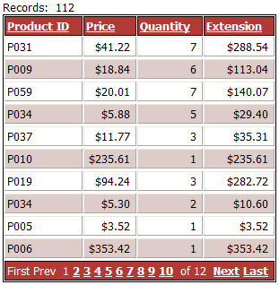
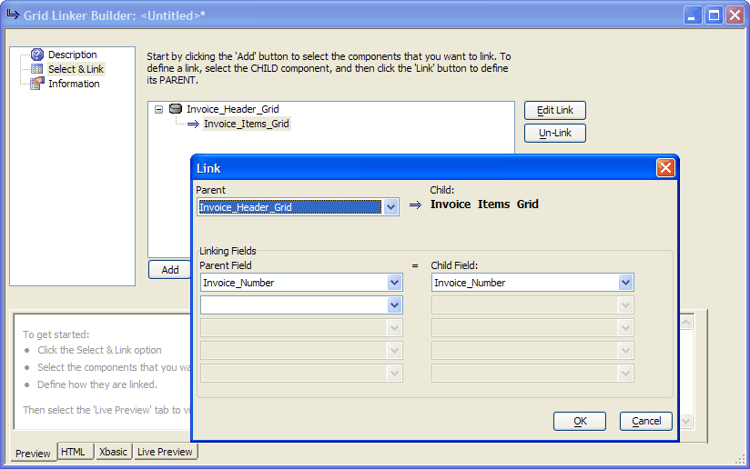

Single Parent Style GridLinker Component
Note: The GridLinker is deprecated in Version 10 and above in favor of tabbed linked content sections (video ) and row expanders (video
) and row expanders (video ).
).
This lesson shows how to make a GridLinker component that displays a single record from a parent table and a grid from a child table in the following format.

Create a new tabular grid based on the AlphaSports Invoice_Header table.
Display the Grid Fields page of the Grid Component Builder.
Move the "Invoice_Number", "Customer_ID", "Date", "Sales_Rep", "Delivery_By", "Pay_Method", "Sales_Tax", "Discount", "CC_Number", and "CC_Expiration" from the Available Fields list to the Selected Fields list.
Make choices under Display Settings > Display Format for fields that need special formatting (such as Currency fields).
Check the Column Properties > Hide Column property for all but the first field that you will display on the grid.
Erase the Column Properties > Column heading property for the first (and only) field that is not hidden.
Check the Column Properties > Freeform layout property for this field.
Click
 in Column Properties > Freeform template property field to display the Freeform Column Layout dialog.
in Column Properties > Freeform template property field to display the Freeform Column Layout dialog.

Select the fields that you want to display from the Available Fields list.
Place the fields (illustrated above) into an HTML table. Either add the table code here manually or click HTML Editor and add the appropriate HTML styling (illustrated below).

Click Save > Close > OK to return to the Grid Component Builder.
Create a second grid component for the child table. Remember the child table has to include (but does not need to display) the field that links it to the parent table.

Create a gridlinker component that associates the two tables with their linking fields.

Place the grid linker component into an A5W page and publish it.
See Also
Supported By
Alpha Five Version 6 and Above. Deprecated in Version 10 and above in favor of linked content sections.